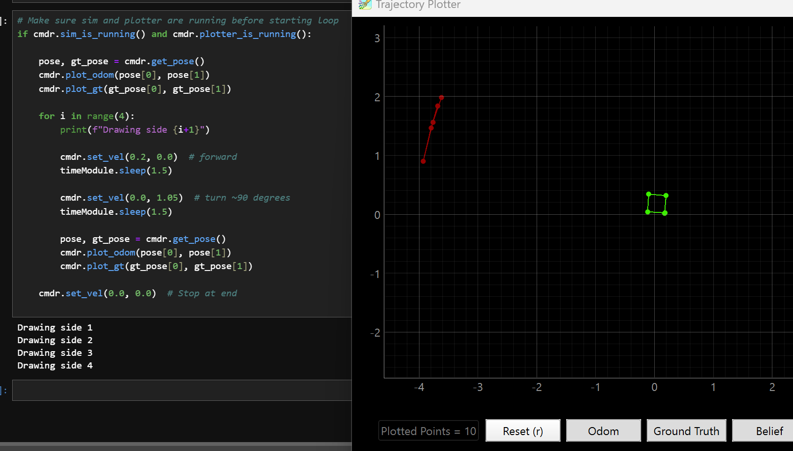
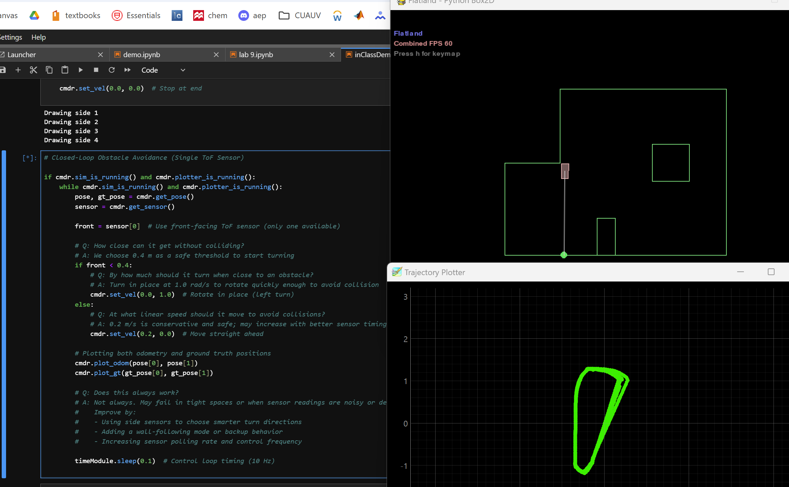
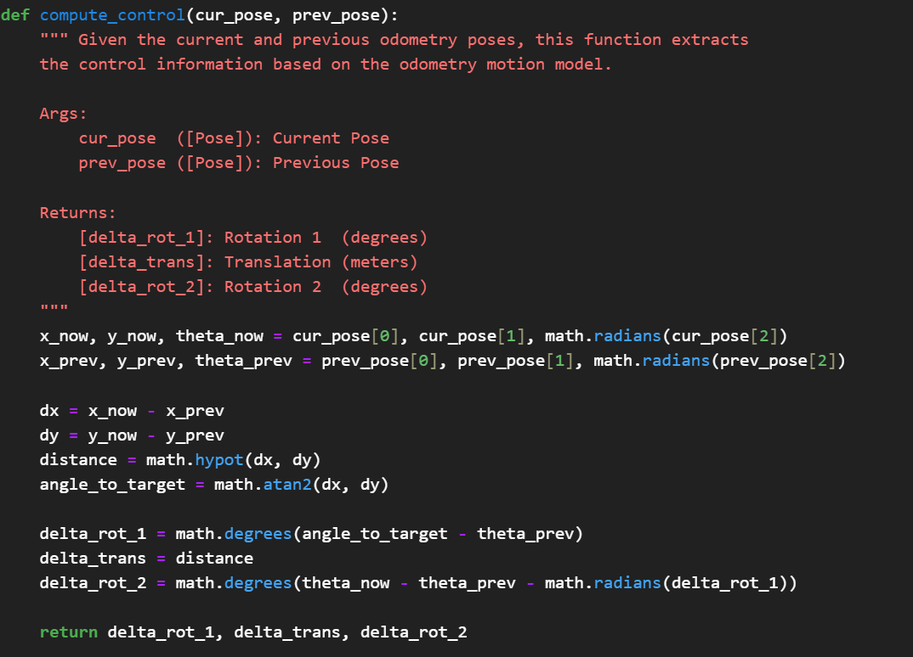
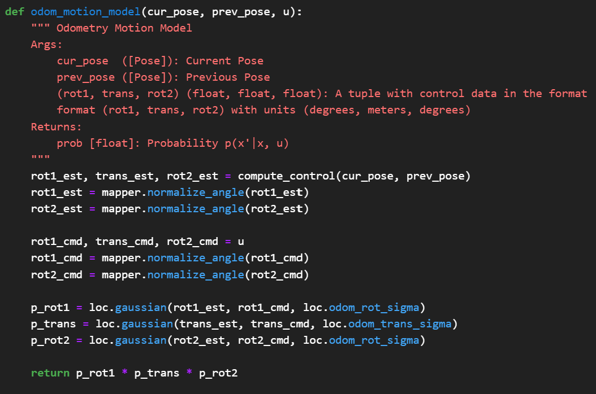
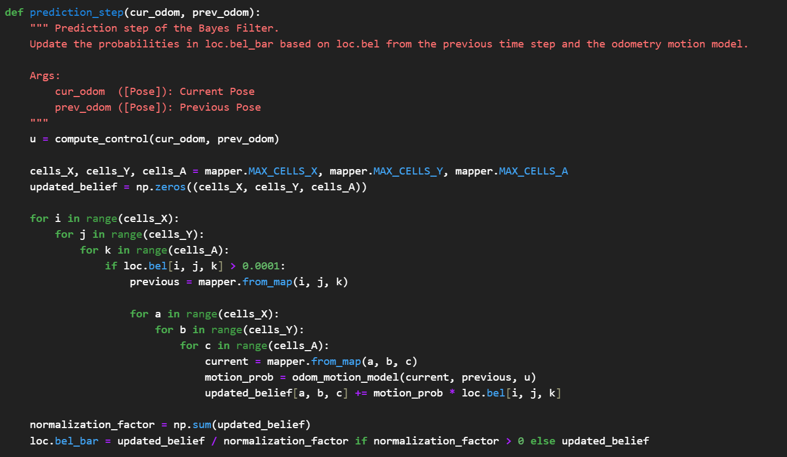
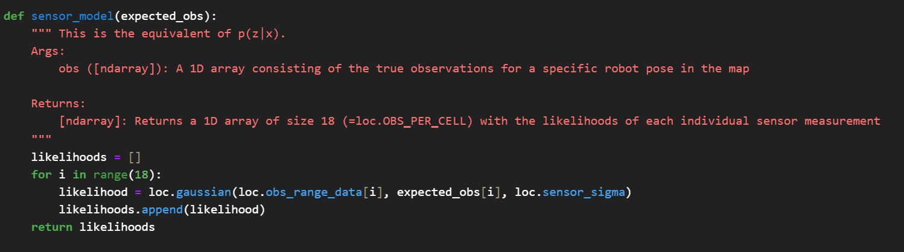
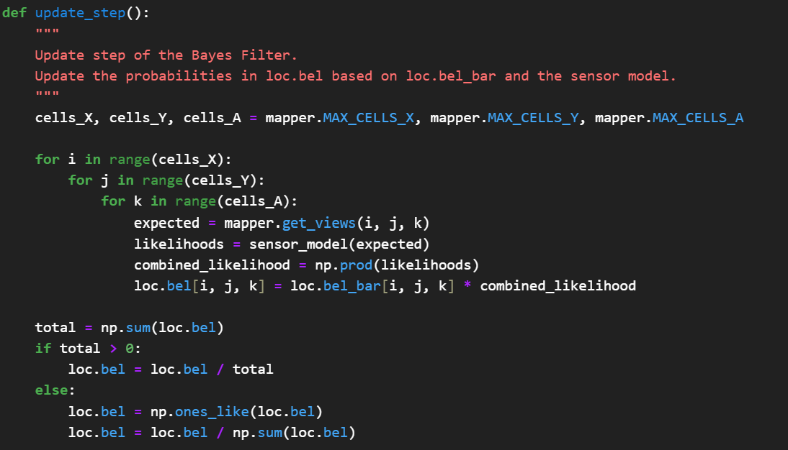

The goal of this lab was to implement grid-based localization using the Bayes filter algorithm. A robot operating in a bounded 2D environment estimated its position and orientation by incorporating noisy odometry and sensor data to iteratively update a belief distribution over a discretized grid of possible states.
I set up the simulator and completed two tasks: open-loop and closed-loop control.
I programmed the robot to follow a set of velocity commands and trace a square loop. The robot's odometry and ground truth path were plotted for comparison. As expected, open-loop control was inconsistent—small odometry errors accumulated, causing the robot to deviate from the intended shape.
I implemented a simple controller for obstacle avoidance. The robot rotated in place at 1.2 rad/s when an object was detected within 0.4 meters, and otherwise moved forward at 0.2 m/s. While this worked well in open areas, it sometimes failed in corners or tight spaces due to having only one front-facing sensor. Adding a backup behavior or side sensors would improve reliability.
The main task was to perform grid localization on the sample trajectory provided in the notebook using the Bayes filter framework.
This function breaks down motion between two poses into: delta_rot_1 (initial turn), delta_trans (straight-line travel), and delta_rot_2 (final turn). These are returned in degrees and meters to be used in the prediction step.
This function estimates how likely it is that the robot moved from a previous to a current pose, given a control input. It compares estimated and commanded motions using Gaussian distributions and returns the combined probability.
This step updates the prior belief using the odometry motion model. It considers transitions between every pair of grid states and uses motion probabilities to compute the new belief estimate, which is then normalized.
This function calculates the likelihood of each of 18 individual sensor readings by comparing actual vs. expected values at a pose, using Gaussian noise. The result is an array of 18 likelihoods.
In this step, the predicted belief is refined using sensor data. Each grid cell’s likelihood is calculated using the sensor model and multiplied with its prior belief, then normalized to produce the updated belief.
The odometry-only path (red) was highly inaccurate and drifted significantly. The belief (blue), however, closely followed the true path (green) for most of the run. Even when the belief deviated—especially during turns or at the center of the grid—it quickly corrected itself. This demonstrates the Bayes filter’s ability to localize accurately despite poor odometry.
The Bayes filter outperformed odometry alone by quickly correcting drift using sensor data. Compared to the Kalman filter, it handled nonlinearity and discrete states better, making it more reliable for accurate robot localization.